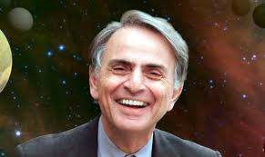

Edwin Hubble (November 20, 1889 – September 28, 1953) was an American astronomer. He played a crucial role in establishing the fields of extragalactic astronomy and observational cosmology and is regarded as one of the most important astronomers of all time. Hubble discovered that many objects previously thought to be clouds of dust and gas and classified as "nebulae" were actually galaxies beyond the Milky Way. He used the strong direct relationship between a classical Cepheid variable's luminosity and pulsation period (discovered in 1908 by Henrietta Swan Leavitt) for scaling galactic and extragalactic distances. Hubble provided evidence that the recessional velocity of a galaxy increases with its distance from the Earth, a property now known as "Hubble's law", despite the fact that it had been both proposed and demonstrated observationally two years earlier by Georges Lemaître.[10] Hubble-Lemaître's Law implies that the universe is expanding.[11] A decade before, the American astronomer Vesto Slipher had provided the first evidence that the light from many of these nebulae was strongly red-shifted, indicative of high recession velocities. Hubble's name is most widely recognized for the Hubble Space Telescope which was named in his honor, with a model prominently displayed in his hometown of Marshfield, Missouri.
Carl Sagan (November 9, 1934 – December 20, 1996) was an American astronomer, cosmologist, astrophysicist, astrobiologist, author, science popularizer, and science communicator in astronomy and other natural sciences. He is best known for his work as a science popularizer and communicator. His best known scientific contribution is research on extraterrestrial life, including experimental demonstration of the production of amino acids from basic chemicals by radiation. Sagan assembled the first physical messages sent into space: the Pioneer plaque and the Voyager Golden Record, universal messages that could potentially be understood by any extraterrestrial intelligence that might find them. Sagan argued the now accepted hypothesis that the high surface temperatures of Venus can be attributed to and calculated using the greenhouse effect. Sagan published more than 600 scientific papers and articles and was author, co-author or editor of more than 20 books. He wrote many popular science books, such as The Dragons of Eden, Broca's Brain and Pale Blue Dot, and narrated and co-wrote the award-winning 1980 television series Cosmos: A Personal Voyage. The most widely watched series in the history of American public television, Cosmos has been seen by at least 500 million people across 60 different countries. The book Cosmos was published to accompany the series. He also wrote the science fiction novel Contact, the basis for a 1997 film of the same name. His papers, containing 595,000 items,are archived at The Library of Congress.
Stephen Hawking (8 January 1942 – 14 March 2018) was an English theoretical physicist, cosmologist, and author who was director of research at the Centre for Theoretical Cosmology at the University of Cambridge at the time of his death. He was the Lucasian Professor of Mathematics at the University of Cambridge between 1979 and 2009. His scientific works included a collaboration with Roger Penrose on gravitational singularity theorems in the framework of general relativity and the theoretical prediction that black holes emit radiation, often called Hawking radiation. Hawking was the first to set out a theory of cosmology explained by a union of the general theory of relativity and quantum mechanics. He was a vigorous supporter of the many-worlds interpretation of quantum mechanics. Hawking achieved commercial success with several works of popular science in which he discusses his own theories and cosmology in general. His book A Brief History of Time appeared on the British Sunday Times best-seller list for a record-breaking 237 weeks. Hawking was a Fellow of the Royal Society (FRS), a lifetime member of the Pontifical Academy of Sciences, and a recipient of the Presidential Medal of Freedom, the highest civilian award in the United States. In 2002, Hawking was ranked number 25 in the BBC's poll of the 100 Greatest Britons.